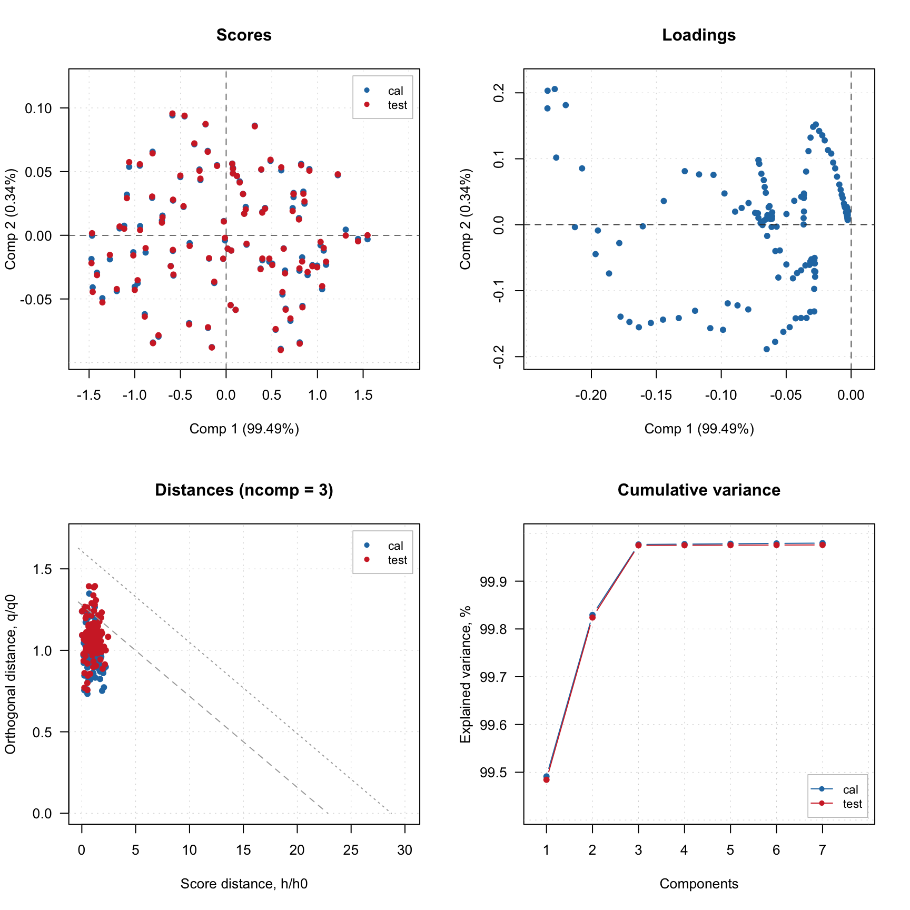

Model complexity
Complexity of PCA model is first of all associated with selection of proper (optimal) number of components. The optimal number should explain the systematic variation of the data points and keep the random variation uncaptured. Traditionally, number of components is selected by investigation of eigenvalues or looking at plot with residual or explained variance. However, this is quite complicated issue and result of selection depends very much on quality of data and purpose PCA model is built for. More details can be found in this paper.
In mdatools there are several additional instruments both to select proper number of components as well as to see if, for example, new data (test set or new set of measurements) are well fitted by the model.
The first tool is the use of degrees of freedom for orthogonal and score distances, we mentioned earlier. A simple plot, where number of the degrees of freedom is plotted against number of components in PCA model can often reveal the presence of overfitting very clearly — the DoF value for the orthogonal distance, \(N_q\) jumps up significantly.
The code and its outcome below show how to make such plot separately for each distance and for both. The first plot in the figure is conventional plot with variance explained by each component. The model is made for Simdata, where it is known that the optimal number of components is two.
data(simdata)
Xc = simdata$spectra.c
Xt = simdata$spectra.t
m = pca(Xc, 6)
par(mfrow = c(2, 2))
plotVariance(m, type = "h", show.labels = TRUE)
plotQDoF(m)
plotT2DoF(m)
plotDistDoF(m)
As you can see from the plots, second component explains less than 1% of variance and can be considered as non significant. However, plot for \(N_q\) shows a clear break at \(A = 3\), indicating that both first and second PCs are important. The \(N_h\) values in this case do not provide any useful information.
In case if outliers present it can be useful to investigate the plot for \(N_q\) using classical and robust methods for estimation as shown in example below.
m = pca(Xc, 6)
par(mfrow = c(1, 2))
plotQDoF(m, main = "DoF plot (classic)")
m = setDistanceLimits(m, lim.type = "ddrobust")
plotQDoF(m, main = "DoF plot (robust)")
In this case both plots demonstrate quite similar behavior, however if they look differently it can be an indicator for a presence of outliers. The DoF plots work only if data driven method is used for computing of critical limits.
Another way to see how many components are optimal in the model, in case if you have a test set or just a new set of measurements you want to use the model with, is to employ the Extreme plot. The plot shows a number of extreme values for different \(\alpha\). Imaging that you make several distance plots with different \(\alpha\) values and count how many objects model found as extremes. On the other hand you know that the expected value is \(\alpha I\). If you plot the number of extreme values vs. the expected number — this is the Extreme plot.
If model captures systematic variation both for calibration and test set the points on this plot will lie within a confidence ellipse shown using light blue color. However, if model is overfitted, the points are getting outside it.
Below you can see two Extreme plots made for the same data as the previous example. The left plot show results for calibration set for number of components in the PCA model equal to 2 and 3. The right plot show the results for the test set.
Xc = simdata$spectra.c
Xt = simdata$spectra.t
m = pca(Xc, 6, x.test = Xt)
par(mfrow = c(1, 2))
plotExtreme(m, comp = 2:3, main = "Extreme plot (cal)")
plotExtreme(m, comp = 2:3, res = m$res$test, main = "Extreme plot (test)")
As you can see, in case of calibration set, the points are lying withing confidence ellipse for both \(A = 2\) and \(A = 3\). However for the test set, the picture is quite different. In case of \(A = 2\) most of the points are inside the interval, but for \(A = 3\) all of them are clearly outside.
We hope these new tools will make the use of PCA more efficient.